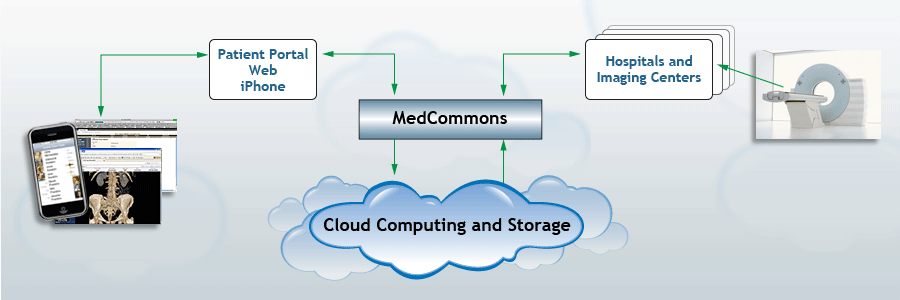

|  |
 |
 |
 |
 |
Platform Concepts and FacilitiesMedCommons, Inc., markets and licenses separate MedCommons installations each of which is built upon the MedCommons Platform. The platform supports the long term storage of ‘Patient Medical Records and Related Documents’ in a controlled, secured, scalable, audit-able and reliable long term repository. The platform includes basic applications for Healthcare Document management and display, and for connection to Imaging Equipment and other special devices within the Healthcare Infrastructure. Some Platform customers and partners add additional document support and applications to handle those documents. The MedCommons Platform is HIPAA compliant and FDA-approved.Archival Healthcare Document RepositoryMedCommons, at the most basic level, keeps document archives in perpetuity and provides healthcare domain-specific applications for access to these documents. A Personal Health Record (PHR) is a particular collection of standards-based personal documents and is a prime component of a MedCommons Account.A MedCommons Account can hold arbitrary documents in perpetuity. The builtin document types for Healthcare that are imported / exported by a MedCommons Account are:
Importantly, MedCommons maintains private files for each account including:
Health URLsThe MedCommons Health URL is the web address of a MedCommons account. Any user of the Health URL with Read authorization can see the actual Account ID. A Health URL can be further qualified with a Tracking Number or Document GUID to select a particular CCR. Entering the Health URL into a browser box displays the Current CCR or challenges the user to authenticate himself if necessary. A user with Write authorization may update a CCR using a POST request to the Health URL.MORE > FederationMedCommons, Inc., markets and licenses separate MedCommons installations. Each installation, known as a MedCommons Instance interoperates with every other Instance unless the licensee deliberately opts-out. Each Instance contains a built-in system for creating and managing user accounts and identities, but consistent with current best practices in Identity Management, each Instance can also act as a Liberty Alliance Service Provider, or as on OpenID Client, and will run as a service provider (SP) with other federation schemes in the future. When using Liberty or OpenID, the MedCommons SP supports multiple Identity Providers concurrently, allows the licensee to offer Single Sign On using his existing system of IDs, and to support completely pseudonymous accounts.MORE > Global ServicesIn order to allow separate instances to interoperate, a redirection service is provided that allows a licensee to find a MedCommons document on any other MedCommons system via a unique ID known as a Tracking Number. Like the Credit Card networks, all MedCommons Account IDs are unique regardless of the actual MedCommons licensee or sponsor and any account and any separate instance can be accessed if the requisite consents are in place.A redundant central coordination facility for both Tracking Numbers and Account Identitifers is maintained by MedCommons, Inc at www.medcommons.net. These tokens are handed out in large batches (by the thousands) to allow licensees to create their own accounts and documents without constant communications with MedCommons. AccountsAny action involving private information in MedCommons requires an Account. Accounts can be created via an API or via a self-service web page. There are three distinguishing properties of each MedCommons accounts:
A verified patient can control what information is in their medical records. The verified patient can change their mind at any point. They may change access to a medical record; they may delete something that they decide to delete. A patient can see the same thing as the doctor or other viewer with Read access will see. This is the Current CCR (both views) and other tabs. Anyone can see who the list of people and groups who will see their record and who has ever seen their medical records. Anyone may delegate certain actions to another user such as a family member who may be able to edit/delete a patient's medical record or a clinical practitioner of some sort may be given control. The verified surrogate can to override the others. ConsentsA consent (a.k.a. authorization) is an optionally signed document associated with an Account. Typically, but not necessarily, a Consent grants some entity (Doctor, Hospital, Computer System) access to a portion of the Account. MedCommons stores the Consent Documents currently associated with an Account. MedCommons also supports multiple forms of consents that can be modified by Licensees. There are three kinds of consents implemented in MedCommons:
GroupsHealth Records are routinely shared between patients, family members, doctors, and 3rd parties. Access to Health Records and other associated documents in MedCommons is provided by three mechanisms:
MedCommons provides for optional patient control of all document sharing. Patient control requires verified patient status. New Accounts created in the context of a Group automatically grant sharing consent to that Group. Beyond the original creator group, other users and groups can be invited to access the Account. Import/ExportThese are the various means of importing documents and other info into a MedCommons Account with Account ID nnnnnnnnnnn:
Internal Storage FormatThe MedCommons ISF is a a flexible, neutral internal storage format for PHRs designed with the following overall goals:
Builtin ApplicationsSeveral applications and components are supplied with the MedCommons Instance and supported by MedCommons, Inc.Unified ViewerThe brandable medcommons viewer supports multiple base document types. The minimum supported resolution is 1024*768 . A base document such as CCR can have many attachments, all of which are displayed equitably thru type specific viewers. The alternate view of the CCR, as a long white form, is standard across all MedCommons systemsDashboard/WorklistEvery Worklist has a worklistURL that can be pasted into blogs, wikis, etc. There are some simple, easy to understand status fields that form the essence of the query, along with MedCommons Account Ids, group ids, and other data.PrintingUtilizes the native host o/s printing facilities available to the user without requiring the installation, even via download, of extra components. A preview facility is always available. The printed document is not stored by MedCommons. If a user wants to store a printed document then the 'Save to File or PDF' options of the host operating systems printer dialogue can be utilized The layout and fonts on any printed page are insensitive to current screen display preferences and yield the same printed format regardless of user settings. The printed formats accommodate both US (letter, legal, etc) and World (A3,A4, etc) standard sizes without error. All printed pages are branded by MedCommons, the Customer (partner/affiliate/rhio/etc), or both.DDL GatewayThe MedCommons application that permits the integration of DICOM from Hospital and Imaging Centers into MedCommons Accounts, and the delivery to radiologists and other professionals running DICOM workstations and displays. This applicaiton is provided in a form that can integrated into an online web portal or service.MedShooter iPhone ApplicationA brandable iPhone app for shooting patient photos and videos, for use by sports trainers, dermatologists, and even patients who want to add imaging into their health records.Facebook Family CareTeamA brandable iPhone app for CareGiver and family members to support health needs of both the Elderly and the young.NotificationsMedCommons Notifications are one-way messages delivered to users via Email, IM, RSS, SMS, Fax and Audio. The current implementation supports only Email. Notifications are delivered on a best-efforts basis and may be insecure from a HIPAA PHI perspective. The MedCommons applications do not depend on the delivery of notifications.Any registered user can use the web interface to view past notifications related to any account under his administrative control. |
| © MedCommons Inc. 2009 | |